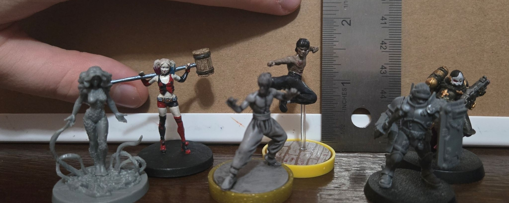

Painting Miniatures
What started off as just a fun idea to paint my Moon Knight figure from the Unmatched board game, quickly evolved into my most relaxing hobby. There is just something so soothing to having to take your time and huddle over your work as you meticulously flesh out the figure with each stroke. It must be like bottling ships I think. After a while I got more confident and after the acquisition of the Warhammer paints and finer brushes, I started being more precise and I was able to make out faces on a scale smaller than your pinkie nail.
Here's a reference of scale for each of the three main miniature types I have:

Below are collections for my Gotham City Chronicles, Unmatched, and Warhammer 40K miniatures for you to peruse at your leisure. Each have their own little quirks and insights into my creative process with them. Enjoy.